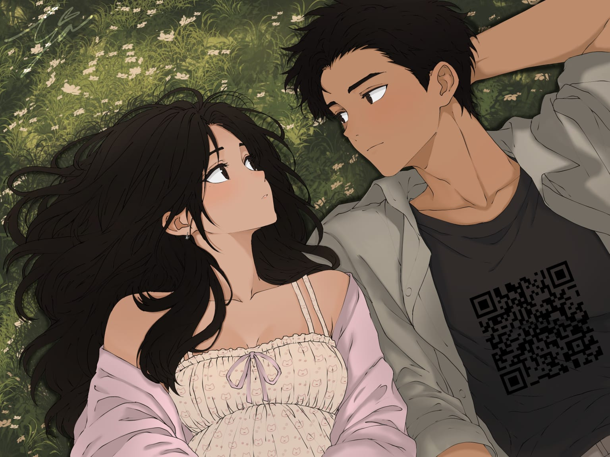

THE ARTIST
Behind the
drawings.

A LITTLE ABOUT HER
Creating little worlds one drawing at a time.
Drawing has always been a way of turning thoughts into something visible.
From small sketches to complete illustrations, every piece carries a little part of her imagination.
This website is simply a place to collect those pieces.
✿
There is a little bit of magic in ordinary moments.
WANT TO SEE MORE?